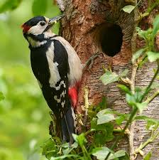

Birds are warm-blooded vertebrates belonging to the class Aves. They are
characterized by feathers, beaks without teeth, lightweight skeletons,
and the ability to lay hard-shelled eggs. Most birds can fly, thanks to
their strong chest muscles and wings, although some species like
ostriches, emus, and penguins are flightless. There are over 10,000
known species of birds found on every continent, from icy Antarctica to
tropical rainforests. Birds have excellent vision, which helps them
hunt, navigate, and avoid danger. Many species are known for their
melodious calls and songs, used for communication and attracting mates.
Birds play vital roles in the environment. They help pollinate plants,
disperse seeds, and control insect populations. Some birds, like eagles
and vultures, are scavengers and help clean up the environment by
feeding on dead animals. Birds also hold cultural and spiritual
significance in many societies and are a major focus of birdwatching, a
popular hobby around the world.
Birds are divided into two main groups: non-raptors and raptors. Non-raptor
birds include species like sparrows, robins, and parrots, which primarily
feed on seeds, fruits, insects, or nectar. Raptors, such as eagles,
hawks, and owls, are birds of prey that hunt and feed on other animals.
They have sharp talons and beaks adapted for catching and tearing flesh.
Birds are also known for their migratory behavior, with many species
traveling long distances between breeding and wintering grounds. This
migration is often triggered by changes in daylight, temperature, and
food availability. Some birds, like the Arctic Tern, undertake the longest
migrations of any animal, traveling thousands of miles each year.
Arctic Tern
Scientific Name: Sterna paradisaea
Type :
Non-raptor
The Arctic Tern is a small seabird renowned not for its size, but for
its extraordinary endurance and adaptability. Known as one of the
greatest travelers in the animal kingdom, this bird annually performs
a round-trip migration from the Arctic to the Antarctic, covering tens
of thousands of kilometers. With elegant white plumage, sharp red
beaks, and streamlined bodies, Arctic Terns are as beautiful as they
are biologically fascinating.
Habitat
Arctic Terns breed in Arctic and sub-Arctic regions, including
Greenland, Iceland, Alaska, and northern parts of Canada, Europe, and
Russia. Their nesting sites are typically coastal tundra, rocky
islands, and beaches. During the non-breeding season, they fly to the
Antarctic Circle, spending their time in cold southern oceans, far
away from human settlements. This extreme migration allows them to
experience two summers per year, giving them more daylight than any
other animal on Earth.
Feeding Habits
Arctic Terns are carnivorous, feeding mainly on small fish and marine
invertebrates like shrimp and krill. They forage by hovering above the
water and diving to catch prey near the surface. Sometimes, they also
pick insects from land or water, especially during breeding when food
must be plentiful for their chicks. Their sharp eyesight helps them
spot fish underwater, and their fast, agile flight aids in quick
capture.
Migration
Every year, the Arctic Tern travels from the Arctic to the Antarctic
and back again, making a round trip of about 70,000 to 80,000
kilometers (43,000 to 50,000 miles)—the longest known migration in the
animal kingdom. They follow a zigzag route, catching favorable wind
currents and stopping at key feeding sites along the way. This journey
is not only a test of endurance but also a demonstration of how finely
attuned these birds are to Earth's geography and weather systems.
Breeding and Life Cycle
Breeding takes place during the Arctic summer, when daylight is nearly
continuous. Arctic Terns are monogamous and often return to the same
breeding grounds—and even the same mate—year after year. They lay 1 to
3 eggs in shallow ground nests lined with grass and feathers. Both
parents share in incubation and feeding the chicks.
Once hatched, the chicks are semi-precocial: they are born with down
and can walk, but they rely on their parents for food. Fledging occurs
after about three to four weeks, and not long after, the long
migration south begins.
Niche and Ecological Role
The Arctic Tern plays a key role in the marine ecosystem. As predators
of small fish and invertebrates, they help control these populations.
They are also indicators of ocean health; changes in their migration
patterns or breeding success can reflect shifts in fish populations or
ocean temperatures due to climate change.
Moreover, they have few natural predators due to their remote nesting
locations, though eggs and chicks are vulnerable to foxes, gulls, and
skuas. Humans pose threats through habitat disturbance, climate
change, and pollution. Fortunately, they are currently listed as Least
Concern on the IUCN Red List, though local populations may vary in
status.
Facts
An individual Arctic Tern can fly over 2.5 million kilometers in its
lifetime—enough to reach the Moon and back more than three times.
They have a lifespan of around 30 years, meaning they may see more
daylight than any other animal.
During migration, they feed along the way, often stopping in the North
Atlantic, off the coast of Africa, or near New Zealand, depending on
the route.
Despite their graceful appearance, they are highly aggressive around
their nests and will dive-bomb humans and predators alike.
The Arctic Tern's migration is so extensive that it has been observed
to fly over 100,000 kilometers (62,000 miles) in a single year,
experiencing both the Arctic and Antarctic summers.
Their name comes from the Old Norse word "terna," meaning "tern," and
they are closely related to other terns, gulls, and skuas.
Blue-Footed Booby
Scientific Name : Sula nebouxii
Type :
Non-raptor
The Blue-footed Booby is one of the most iconic seabirds in the world,
instantly recognizable by its bright turquoise-blue feet and comical
behavior. Native to the eastern Pacific coastline, this bird combines
beauty, skill, and quirkiness, making it a favorite among wildlife
watchers and scientists alike. Behind its playful appearance lies a
bird perfectly adapted to life at sea and a fascinating case of
natural selection and mate choice.
Habitat and Distribution
The Blue-footed Booby is mainly found along the coastal regions of the
eastern Pacific Ocean, particularly:
The Galápagos Islands (home to a large and well-known population)
Western coasts of Central and South America, especially in countries
like Ecuador, Peru, and Mexico.
They inhabit rocky shores, islands, and coastal cliffs, nesting in
open, flat areas free from vegetation. Their habitat is always close
to rich fishing grounds, since they rely heavily on marine life to
survive and raise their young.
Feeding Habits
Blue-footed Boobies are skilled marine predators, feeding mainly
on:
Small fish such as anchovies, sardines, and mackerel
Occasionally, squid and crustaceans.
Their feeding technique is both elegant and powerful. They fly high
above the water, then dive headfirst at high speeds, folding their
wings just before hitting the surface like a dart. These plunge-dives
can be so precise that they catch fish swimming below the surface.
They often hunt in groups, making their dives together to confuse and
trap schools of fish.
Boobies have excellent eyesight and can spot fish from remarkable
heights. Their nostrils are permanently closed to avoid water rushing
in during dives—they breathe through their mouths instead.
Breeding and Courtship
One of the most famous aspects of the Blue-footed Booby is its
courtship dance—a truly unforgettable sight. The male uses his bright
blue feet to attract a mate by performing a high-stepping dance,
lifting each foot slowly and dramatically while showing off to the
female. He may also present small stones or twigs and spread his wings
in a sky-pointing display.
What makes this dance even more interesting is that:
Foot color matters: The bluer the feet, the more attractive the male.
Brighter feet signal good health and strong genes.
If a male’s feet are pale, a female may reject him, as it could
indicate poor nutrition or illness.
After mating, the female lays 1 to 3 eggs in a small scrape on the
ground. Both parents take turns incubating the eggs with their feet,
which have special blood vessels to transfer heat. Chicks hatch after
about 40–45 days and are fed regurgitated fish by both parents.
Adaptations for Survival
The Blue-footed Booby is well adapted to its marine environment:
Webbed blue feet aid in swimming and are key to mate selection.
Streamlined bodies and strong wings allow for long-distance flying and
agile diving.
Salt glands above their eyes help remove excess salt from seawater,
which they excrete through their nostrils.
Excellent vision helps them track prey from high above the ocean.
Despite their awkwardness on land, they are powerful and graceful in
the air and water.
Niche and Ecological Role
As top-level fish predators, Blue-footed Boobies help maintain the
balance of fish populations in the ocean. Their diet and behavior are
influenced by ocean conditions, making them indicators of ocean
health. During events like El Niño, when water temperatures rise and
fish become scarce, booby populations may suffer reduced breeding
success.
Their colonies also contribute guano (droppings), which enriches the
surrounding soil and supports other island life.
Unique & Fascinating Facts
Both parents share duties equally—from incubation to feeding, making
them excellent partners.
They can dive from heights of up to 25 meters (80 feet) and swim
underwater to chase fish.
Chicks compete for food, and sometimes siblicide occurs when food is
scarce—the stronger chick may push its sibling out of the nest.Despite
their silly name, Blue-footed Boobies are intelligent and strategic
hunters.
Their feet lose brightness if they are not well-fed or healthy, making
foot color an honest signal of fitness.
The Blue-footed Booby's name comes from the Spanish word "bobo," which
means "fool" or "clown," likely due to their clumsy movements on land.
They are also known as "blue-footed boobies" to distinguish them from
other booby species, such as the Red-footed Booby and the Nazca Booby.
The Blue-footed Booby is a protected species in many areas, and
conservation efforts focus on preserving their nesting habitats and
monitoring populations to ensure their survival in the wild.
The Blue-footed Booby is a popular subject of study for scientists
interested in evolution, behavior, and ecology. Their unique mating
rituals and adaptations provide valuable insights into the processes
of natural selection and sexual selection.
The Blue-footed Booby's feet are not only a mating signal but also
serve a practical purpose. Their webbed feet help them swim efficiently
in the ocean, allowing them to catch fish and evade predators.
The Blue-footed Booby's migration patterns are not well understood,
but they are known to travel long distances in search of food and
suitable breeding grounds. They are capable of flying at speeds of up
to 40 miles per hour (64 kilometers per hour) during migration.
Cassowary
Type :
Non-raptor
The cassowary is one of the most remarkable birds walking the Earth
today. With its dinosaur-like appearance, vibrant coloring, and
reputation as one of the most dangerous birds in the world, the
cassowary is as fascinating as it is fearsome. Native to the tropical
forests of northern Australia, New Guinea, and surrounding islands,
this flightless bird plays a vital role in its ecosystem—and commands
respect from anyone who crosses its path.
Species of Cassowary
There are three species of cassowary:
1.
Sourthern Cassowary (Casuarius casuarius)– the most well-known and widely studied
2. Northern Cassowary (Casuarius unappendiculatus)
3. Dwarf Cassowary (Casuarius bennetti)
The Southern Cassowary is the largest and most iconic, often referred
to when people mention “the cassowary.”
Habitat
Cassowaries inhabit dense tropical rainforests, swamps, and mangroves
in northern Australia, New Guinea, and nearby islands. They prefer
areas with thick vegetation that provides cover and abundant food
sources. These birds are solitary and territorial, often establishing
large home ranges that they defend from other cassowaries. Their
primary range includes:
Northern Queensland, Australia+
New Guinea and surrounding islands
Parts of Indonesia
They rely on thick vegetation and ample fruit supplies, as they are
mostly forest dwellers, using their powerful legs to move through the
underbrush and escape danger.
Physical Characteristics
The cassowary looks like something out of prehistory:
It can grow up to 6.6 feet (2 meters) tall and weigh over 130 pounds
(60 kg). It has coarse black feathers that resemble hair. Its head and
neck are brightly colored in blue, red, and purple, with color
intensity increasing during mating season. On top of its head sits a
casque—a helmet-like structure made of keratin and bone, whose exact
function is still debated. It may help with sound amplification, head
protection, or moving through dense vegetation. But the most iconic
(and dangerous) part of the cassowary is its feet: each has three
toes, and the inner toe sports a dagger-like claw up to 5 inches (12
cm) long—capable of inflicting serious injuries.
Feeding Habits
Cassowaries are omnivorous, but their diet is largely frugivorous
(fruit-based). They consume:
A wide variety of fallen tropical fruits
Fungi, insects, small animals, and even dead mammals if necessary
Their strong beaks and digestive systems allow them to eat toxic or
tough fruits that other animals cannot. Remarkably, cassowaries play a
crucial ecological role as seed dispersers. Many rainforest plants
rely on cassowaries to eat their fruit and deposit the seeds—often far
away, complete with natural fertilizer from their droppings.
Behavior and Movement
They are:
Excellent runners, capable of reaching 50 km/h (31 mph) through dense
jungle
Strong swimmers, often crossing rivers and even swimming in the
ocean
Silent movers, but they can produce deep booming sounds, which may
help them communicate through thick forests
Despite their shy nature, when threatened—especially if cornered or
protecting eggs-they can become extremely aggressive. There have been
recorded attacks on humans, sometimes causing serious injuries or,
rarely, death.
Breeding and Parenting
Cassowary reproduction is as fascinating as the bird itself. In a
reversal of typical bird parenting roles:
Females are larger, more colorful, and dominant. After mating, the
female lays 3–6 large, green eggs in a shallow ground nest. She then
leaves—and the male takes full responsibility, the male incubates the
eggs for about 50 days, and then raises the chicks for up to 9 months.
During this time, he defends them fiercely, teaches them how to find
food, and ensures they survive in the wild jungle environment.
Niche and Ecological Role
Cassowaries are known as “keystone species” because of their crucial
role in seed dispersal. Some rainforest trees and plants depend
entirely on cassowaries to reproduce. Without them, these ecosystems
would collapse. Cassowaries also help shape the forest structure
by:
Spreading large seeds over great distances, enabling rare or
endangered trees to survive Because they can consume over 150
different types of fruit, they’re sometimes called the gardeners of
the rainforest.
Niche Facts and Fascinating Details
The cassowary casque continues growing throughout its life and may
help age or identify individuals. Cassowaries cannot fly, but their
strong legs make them powerful runners and jumpers. The cassowary’s
call—a deep, low-frequency "boom"—is one of the lowest-pitched bird
calls in the world, possibly used for long-distance communication in
dense forests. In Aboriginal culture, cassowaries are respected and
sometimes feared—appearing in stories and myths as guardians of the
forest. Despite their size, they are masters of camouflage in the
underbrush, often going unnoticed even when nearby.
Cassowaries are listed as vulnerable due to habitat loss, hunting,
and vehicle collisions. Conservation efforts focus on protecting their
habitats and educating local communities about their ecological
importance. The cassowary is the only bird in the world with a
"helmet" on its head, which is made of keratin (the same material as
human nails) and can grow up to 18 inches (45 cm) tall. This casque is
thought to help the bird navigate through dense vegetation and may also
play a role in attracting mates during the breeding season.
The cassowary's feet are incredibly powerful, allowing it to run
through dense forests at speeds of up to 50 km/h (31 mph). Its inner
toe has a sharp, dagger-like claw that can inflict serious injuries,
making the cassowary one of the most dangerous birds in the world.
Despite their fearsome reputation, cassowaries are generally shy and
prefer to avoid human contact. They are primarily solitary animals,
although they may form small groups during the breeding season or when
food is abundant.
Cassowaries have a unique way of communicating with each other,
producing deep, booming calls that can be heard over long distances.
These calls are thought to play a role in attracting mates and
establishing territory. They are also known to produce a variety of
other vocalizations, including hisses, grunts, and growls, depending
on their mood and situation.
Cassowaries have a relatively long lifespan, living up to 20–25 years
in the wild. They reach sexual maturity at around 3–4 years of age,
and can live up to 20–25 years in the wild. They reach sexual maturity at around 3–4 years of age, and are known for their solitary nature outside of breeding season.
Drongo
Type :
Non-raptor
The Drongo is a small yet bold bird found across Africa, Asia, and
Australia, famous for its aggressive attitude, sharp intelligence, and
mimicry skills. Despite its modest size and sleek black appearance,
the Drongo has earned a reputation as a feathered outlaw, fearlessly
taking on larger birds and even tricking other animals to steal food.
This combination of agility, bravery, and deception makes it one of
the most intriguing birds in the animal kingdom.
Classification and Species
Drongos belong to the family Dicruridae, and there are about 25
species of them. The most well-known include:
Fork-tailed Drongo (Dicrurus adsimilis) – common in sub-Saharan
Africa
Black Drongo (Dicrurus macrocercus) – widespread in Asia
Ashy Drongo (Dicrurus leucophaeus) – found in Southeast Asia
Spangled Drongo (Dicrurus bracteatus) – found in Australia and New
Guinea
All drongos share some key traits: mostly black or dark grey plumage,
red or dark eyes, and a distinctive forked tail that often gives the
impression of elegance in flight.
Pictured above is the
Habitat and Distribution
Drongos inhabit a wide range of environments including:
Savannas, Urban gardens and farmland, Open woodlands, Forest edges
They are territorial and often perch in open view, scanning their
surroundings for insects or intruders.
Feeding Habits
Drongos are insectivorous, feeding on:
Beetles, Grasshoppers, Wasps, Termites, Ants. Occasionally small
birds, lizards, or fruits.
They catch prey by:
Aerial hunting (snatching insects in mid-air). Ground pouncing after
spotting movement from a perch. But what makes drongos truly unique is
their food-stealing strategy: some species, like the Fork-tailed
Drongo, use deceptive mimicry to trick other animals—such as meerkats
or other birds—into dropping their food. They do this by imitating
alarm calls, causing the animal to flee, thinking a predator is near,
and then swooping down to snatch the abandoned food.
This behavior has earned them nicknames like: “Feathered Trickster” and “The Liar Bird”
Breeding and Nesting
Breeding usually occurs in spring and summer, depending on the region.
Drongos build:
Small cup-shaped nests made of twigs and cobwebs. Often placed high in
trees, well-hidden in foliage The female lays 2–4 eggs, and both
parents help in:
Incubating eggs and feeding chicks Aggressively defending the nest
against any intruder, regardless of size
Behavior and Intelligence
Drongos are incredibly intelligent and display: Vocal mimicry: They can imitate over 30 bird species and even
some mammals. Problem-solving skills: They attack much larger birds (like
eagles or hawks) if they come too close to their nest. Problem-solving skills: In lab studies, drongos have shown the
ability to learn, adapt, and even manipulate behavior for gain.
They are known to form temporary alliances with other birds to mob
predators, but they're just as quick to steal from their allies when
the chance arises.
Fascinating Facts
The Fork-tailed Drongo can fake alarm calls from meerkats, babblers,
and other birds to trick them. Drongos are smaller than pigeons but
will chase away hawks, crows, and even owls. Their name comes from a
Malagasy word, and early European explorers used it to describe the
fork-tailed species. The Black Drongo is sometimes called the “King
Crow” in parts of Asia for its boldness and upright posture.
Drongos are often seen in pairs or small groups, but they can also be
solitary. They are highly adaptable and can thrive in urban areas,
often seen in gardens, parks, and agricultural fields. Their
intelligence and adaptability make them successful in various
environments, from rural farmlands to bustling cities.
Drongos are known for their acrobatic flight, performing aerial
displays that include sharp turns, dives, and glides. They are agile
fliers, capable of catching insects mid-air and maneuvering through
dense vegetation with ease. Their forked tails help them change
direction quickly, making them efficient hunters.
Drongos are also known for their social behavior, often seen
interacting with other bird species. They can be quite vocal,
communicating with a variety of calls and whistles. Their mimicry
skills are not just for stealing food; they also use them to communicate
with other drongos and to establish territory. In some cultures, drongos
are considered symbols of intelligence and cunning. Their ability to
mimic other birds and their bold behavior have led to various myths
and legends about them. In some regions, they are seen as protectors
of crops, as they help control insect populations in agricultural
areas.
Drongos are known to have a complex social structure, with
hierarchies and interactions that vary by species. They can be quite
aggressive when defending their territory or nest, often chasing away
larger birds and even humans who venture too close. Their boldness
and fearless nature have made them a subject of fascination for bird
watchers and researchers alike.
Eagle
Type:Birds of Prey
The eagle is one of the most powerful, majestic, and admired birds in
the world. With its commanding presence, keen eyesight, and unmatched
hunting ability, the eagle has become a symbol of strength, freedom,
and courage across many cultures. Found on every continent except
Antarctica, eagles come in various species, each adapted to different
environments—but all sharing traits of power, grace, and dominance in
the sky.
Types of Eagles
There are around 60 species of eagles globally. The most well-known
include: Bald Eagle (Haliaeetus leucocephalus)
– found in North America; national bird of the USA
Golden Eagle (Aquila chrysaetos) – widespread in the Northern
Hemisphere
African Fish Eagle (Haliaeetus vocifer) – known for its haunting call
and found near African rivers and lakes
Philippine Eagle (Pithecophaga jefferyi) – one of the rarest and
largest forest eagles
Harpy Eagle (Harpia harpyja) – powerful eagle of South American
rainforests
Each species varies in size, habitat, and diet, but all are top-tier
predators.
Habitat and Distribution
Eagles live in diverse habitats, including:
Mountains, Forests, Grasslands, Wetlands and coastal regions They are
often found near lakes, rivers, or open areas where they can easily
spot prey from the sky.
Eagles are territorial and require large hunting ranges. Some build
nests on high cliffs, others in tall trees, and some even on man-made
structures like power poles or cell towers.
Feeding Habits
Eagles are carnivorous raptors, meaning they are birds of prey. Their
diet includes:
Fish (e.g., Bald Eagle, African Fish Eagle)
Small mammals like rabbits, hares, squirrels, and even monkeys (Harpy
Eagle)
Reptiles and birds
Occasionally, carrion (dead animals), especially during winter
They hunt using:
Powerful talons to grab and kill prey
Sharp hooked beaks to tear flesh
Incredible eyesight, up to 4–8 times sharper than a human’s
Eagles are known for soaring silently at great heights while scanning
the ground or water below for movement.
Breeding and Nesting
Eagles are monogamous and often mate for life. They return to the same
nesting site each year.
Key facts about eagle breeding:
They build huge nests called eyries, which can be 2–3 meters wide and
reused for decades. The female lays 1 to 3 eggs, and both parents help
incubate and feed the chicks. Chicks hatch with soft down and are fed
regurgitated food until they can eat solid meat. Young eagles, called
eaglets, grow rapidly but may take several months before they fledge
(leave the nest). Even after that, they often stay near their parents,
learning to hunt and survive.
Behavior and Adaptations
Eagles are:
Solitary or paired—they don't form large flocks
Strong fliers, capable of gliding for hours without flapping
Highly territorial, especially during nesting season
Adaptations include:
Large wingspans (up to 2.5 meters in some species)
Strong, curved talons and beaks
Exceptional vision, allowing them to spot prey from over a kilometer
away
They can dive at speeds over 160 km/h (100 mph) when hunting.
Fascinating Facts
Bald Eagles aren’t actually bald—their name comes from an old word
meaning “white-headed.” Harpy Eagles have talons the size of a grizzly
bear’s claws. Golden Eagles can carry prey up to 4 kg (9 lbs) while
flying. Eagles have nictitating membranes—a third eyelid that protects
their eyes during flight and while feeding. The oldest known wild
eagle lived to be 38 years old.
Eagles are often seen as symbols of power and freedom. They appear on
national emblems, flags, and coats of arms in many countries, including
the United States, Germany, and Mexico. The Bald Eagle was chosen as
the national bird of the United States in 1782 due to its majestic
appearance and association with strength and independence.
Eagles are also important in various cultures and mythologies. In
Native American traditions, they are often seen as messengers between
humans and the spirit world, representing courage, wisdom, and
protection. In ancient Rome, eagles were associated with Jupiter, the
king of the gods, and were used as military standards.
Eagles are apex predators, meaning they have no natural enemies in the
wild. However, they face threats from habitat loss, hunting, and
poisoning. Conservation efforts have helped some species recover from
near extinction, such as the Bald Eagle in North America.
Eagles are known for their impressive courtship displays, which often
involve aerial acrobatics, soaring, and calling
to each other. During courtship, eagles may lock talons and tumble
through the air, showcasing their strength and agility. This behavior
is not only a display of fitness but also helps strengthen the bond
between mates.
Eagles have a unique way of communicating with each other, using a
variety of vocalizations, including high-pitched whistles, chirps,
and screams. These calls can convey different messages, such as
warning of danger, signaling territory boundaries, or attracting a mate.
They also use body language, such as wing flapping and head movements,
to communicate with each other.
Eagles are highly adaptable birds, capable of living in a wide range of
environments, from coastal areas to mountainous regions. They can
thrive in both temperate and tropical climates, as long as there is
sufficient food and suitable nesting sites. This adaptability has
allowed them to colonize diverse habitats across the globe.
The Bald Eagle, once endangered due to hunting and pesticide use, has
made a remarkable recovery thanks to conservation efforts. It was
removed from the U.S. Endangered Species List in 2007, and its
population has rebounded significantly in recent years.
Eagles are often seen as symbols of power and freedom. They appear on
national emblems, flags, and coats of arms in many countries,
including the United States, Germany, and Mexico. The Bald Eagle was
chosen as the national bird of the United States in 1782 due to its
majestic appearance and association with strength and independence.
Eagles are also important in various cultures and mythologies. In
Native American traditions, they are often seen as messengers between
humans and the spirit world, representing courage, wisdom, and
protection. In ancient Rome, eagles were associated with Jupiter, the
king of the gods, and were used as military standards.
Falcon
Type:Birds of Prey
Falcons are among the most skilled and agile birds of prey, known for
their incredible speed, sharp vision, and hunting prowess. With over
60 species worldwide, falcons inhabit diverse environments—from urban
areas to remote wilderness. Their unique adaptations and behaviors
make them fascinating subjects of study and admiration.
Types of Falcons
There are many species of falcons, but some of the most notable
include: Falcon (Falco peregrinus) – the fastest bird in the world,
capable of reaching speeds over 240 mph (386 km/h) during a dive.
Merlin (Falco columbarius) – a small, agile falcon known for its
speed and hunting skills.
Gyrfalcon (Falco rusticolus) – the largest falcon, found in Arctic
regions, known for its striking plumage.
American Kestrel (Falco sparverius) – the smallest falcon in North
America, often seen hovering in open fields.
Each species has unique adaptations for hunting and survival.
Habitat and Distribution
Falcons are found on every continent except Antarctica. They inhabit a
wide range of environments, including:
Urban areas, grasslands, forests, deserts, and coastal regions.
They prefer open spaces for hunting but also require nesting sites,
which can include cliffs, tall trees, or even buildings and ledges.
Feeding Habits
Falcons are carnivorous and primarily feed on:
Small to medium-sized birds (their main prey)
Small mammals such as rodents and bats
Occasionally insects and reptiles
They are renowned for their hunting technique called the "stoop,"
where they dive at incredible speeds to strike prey mid-air. Falcons
have long, pointed wings and a notched beak, which helps them kill
prey quickly. Unlike hawks and eagles, falcons rely more on speed and
agility than sheer strength.
Breeding and Nesting
Falcons do not build traditional nests. Instead, they lay eggs on
cliff ledges, in tree hollows, or on tall buildings (urban falcons).
Key facts about falcon breeding include:
Females lay 2 to 5 eggs, which are incubated mainly by the female.
Both parents feed the chicks, which fledge after about 5–7 weeks.
Young falcons learn to hunt by practicing aerial maneuvers and chasing prey.
Behavior and Adaptations
Falcons are solitary hunters and are highly territorial during
breeding season. Adaptations include:
Exceptional eyesight for spotting prey from great distances
Streamlined bodies and long wings for high-speed flight
A tomial tooth (notch) on the beak for efficiently dispatching prey
They are also known for their intelligence and ability to adapt to
urban environments, where they may nest on skyscrapers and hunt city pigeons.
Fascinating Facts
The Peregrine Falcon is the fastest animal on Earth, reaching speeds
over 240 mph (386 km/h) in a dive.
Falcons have been used in falconry for thousands of years, prized for
their hunting skills.
Some falcon species migrate thousands of miles between breeding and
wintering grounds.
Urban falcons help control pest bird populations in cities.
The Gyrfalcon is the largest falcon species, with a wingspan of up to
4.5 feet (1.4 meters).
Falcons have a unique hunting technique called "kiting," where they
hover in the air, facing into the wind, while scanning for prey below.
They have a specialized respiratory system that allows them to breathe
efficiently at high speeds, enabling them to sustain their incredible
diving speeds.
Falcons are known for their strong pair bonds, often mating for life.
They perform elaborate courtship displays, including aerial acrobatics
and vocalizations to strengthen their bond and attract mates.
Falcons have a unique hunting technique called "kiting," where they
hover in the air, facing into the wind, while scanning for prey below.
They have a specialized respiratory system that allows them to breathe
efficiently at high speeds, enabling them to sustain their incredible
diving speeds.
Falcons are known for their strong pair bonds, often mating for life.
They perform elaborate courtship displays, including aerial acrobatics
and vocalizations to strengthen their bond and attract mates.
Falcons have a unique hunting technique called "kiting," where they
hover in the air, facing into the wind, while scanning for prey below.
They have a specialized respiratory system that allows them to breathe
efficiently at high speeds, enabling them to sustain their incredible
diving speeds.
Falcons are known for their strong pair bonds, often mating for life.
They perform elaborate courtship displays, including aerial acrobatics
and vocalizations to strengthen their bond and attract mates.
Falcons have a unique hunting technique called "kiting," where they
hover in the air, facing into the wind, while scanning for prey below.
They have a specialized respiratory system that allows them to breathe
efficiently at high speeds, enabling them to sustain their incredible
diving speeds.
Grebe
Scientific Name: Podicipedidae
Type:Non-raptor
Grebes are fascinating aquatic birds known for their unique
adaptations to life on water. With their streamlined bodies, lobed
toes, and exceptional diving abilities, grebes are perfectly suited
for a life spent swimming and hunting in lakes, rivers, and coastal
waters. They are found on every continent except Antarctica and are
known for their elaborate courtship displays and striking plumage.
Types of Grebes
There are about 20 species of grebes, each adapted to different
habitats and climates. Some of the most notable include:
Great Crested Grebe (Podiceps cristatus) – known for its elaborate
courtship dance and striking plumage.
Horned Grebe (Podiceps auritus) – recognized by its distinctive
horn-like feathers during breeding season.
Eared Grebe (Podiceps nigricollis) – has a unique black neck and
striking red eyes.
Pied-billed Grebe (Podilymbus podiceps) – a small, stocky grebe with a
distinctive bill.
Each species has unique adaptations for swimming, diving, and hunting.
Habitat and Distribution
Grebes inhabit a wide range of aquatic environments, including:
Freshwater lakes, ponds, rivers, and marshes
Coastal waters and estuaries
They prefer areas with abundant vegetation for nesting and cover from
predators. Grebes are migratory birds, with some species traveling
long distances between breeding and wintering grounds.
Feeding Habits
Grebes are carnivorous and primarily feed on:
Small fish, crustaceans, aquatic insects, and amphibians
They are expert divers, capable of reaching depths of up to 20 meters
(65 feet) in search of food. Grebes use their lobed toes to propel
themselves underwater, allowing them to chase down prey with agility.
They often swallow their prey whole, as they lack the ability to tear
apart larger animals.
Breeding and Nesting
Grebes are monogamous and often form long-term pair bonds. They build
floating nests made of aquatic vegetation, anchored to reeds or
submerged plants. Key facts about grebe breeding include:
Females lay 2 to 6 eggs, which are incubated by both parents.
The incubation period lasts about 20 to 30 days.
Chicks are precocial, meaning they can swim and dive shortly after
hatching.
Both parents care for the chicks, feeding them small fish and
invertebrates.
Grebes are known for their elaborate courtship displays, which often
include synchronized swimming, head bobbing, and presenting
vegetation to each other. These displays strengthen pair bonds and
help attract mates.
Behavior and Adaptations
Grebes are highly adapted for life in the water. They have:
Streamlined bodies and long necks for efficient swimming
Lobed toes that act like paddles, allowing them to swim quickly and
maneuver easily underwater
Waterproof feathers that trap air, providing buoyancy and insulation
They are excellent divers, capable of holding their breath for up to
30 seconds while hunting. Grebes are also known for their unique
behavior of swallowing their own feathers, which helps protect their
digestive system from sharp fish bones.
Niche and Ecological Role
Grebes play a crucial role in aquatic ecosystems as predators of
small fish and invertebrates. They help maintain the balance of
aquatic food webs by controlling prey populations. Their nesting
activities also contribute to the health of wetland habitats, as they
create floating vegetation that provides shelter for other species.
Grebes are also important indicators of water quality, as their
presence often signifies healthy aquatic environments.
Fascinating Facts
Grebes are known for their unique courtship displays, which can
include synchronized swimming and elaborate dances.
They have a special adaptation that allows them to compress their
feathers, making them more streamlined for diving.
Grebes can produce a variety of vocalizations, including whistles,
grunts, and trills, which they use for communication.
Some species of grebes are known to migrate long distances between
breeding and wintering grounds.
Grebes are often seen carrying their chicks on their backs while
swimming, providing them with protection and warmth.
Grebes are fascinating birds with unique adaptations for life in the
water. Their streamlined bodies, exceptional diving abilities, and
elaborate courtship displays make them a captivating subject for bird
watchers and nature enthusiasts alike. Whether gliding gracefully on a
lake or diving swiftly in search of prey, grebes are a testament to
the wonders of avian evolution.
Grebes are often seen in pairs or small family groups, especially
during the breeding season. They are known for their strong pair
bonds and cooperative parenting, with both parents sharing the
responsibilities of incubating eggs and feeding chicks. Grebes are also
highly territorial, defending their nesting sites from other grebes
and potential predators.
Grebes have a unique way of communicating with each other, using a
variety of vocalizations, including whistles, grunts, and trills.
These calls are used for mating displays, territory defense, and
signaling alarm. Grebes are also known for their ability to mimic
other bird species, which can help them avoid detection by predators
or attract mates.
Grebes are highly adaptable birds, capable of living in a wide range of
aquatic environments. They can thrive in both freshwater and
brackish waters, and some species are even found in coastal areas.
Their adaptability allows them to exploit various food sources and
nesting sites, making them successful in diverse habitats.
Grebes are also known for their unique feeding behavior, which
involves diving underwater to catch prey. They have specialized
adaptations, such as lobed toes and a streamlined body, that allow
them to swim efficiently and catch fish and invertebrates. Grebes can
dive to depths of up to 20 meters (65 feet) and can hold their breath
for up to 30 seconds while hunting.
Grebes are often seen in pairs or small family groups, especially
during the breeding season. They are known for their strong pair
bonds and cooperative parenting, with both parents sharing the
responsibilities of incubating eggs and feeding chicks. Grebes are also
highly territorial, defending their nesting sites from other grebes
and potential predators.
Hornbill
Scientific Name: Bucerotidae
Type :
Non-raptor
Hornbills are unique and fascinating birds known for their striking
appearance, social behavior, and ecological importance. With their
large, curved bills and distinctive casque (a helmet-like structure on
the bill), hornbills are easily recognizable. They inhabit tropical
forests in Africa, Asia, and Melanesia, playing crucial roles in seed
dispersal and forest ecology.
Types of Hornbills
There are about 60 species of hornbills, each with unique
characteristics. Some of the most notable include:
Great Hornbill (Buceros bicornis) – the largest hornbill, known for
its impressive bill and striking black and yellow plumage.
Rhinoceros Hornbill (Buceros rhinoceros) – recognized by its large,
curved bill and distinctive casque.
African Grey Hornbill (Tockus nasutus) – smaller species with a
slender bill and grey plumage.
Oriental Pied Hornbill (Anthracoceros albirostris) – found in Southeast
Asia, known for its black and white coloration.
Each species has unique adaptations for feeding, nesting, and social
behavior.
Habitat and Distribution
Hornbills inhabit a variety of tropical and subtropical environments,
including:
Dense rainforests, open woodlands, and savannas
They are primarily found in Africa, Asia, and Melanesia, with some
species adapted to specific habitats like mangroves or montane forests.
Hornbills are often seen in pairs or small family groups, foraging for
food and nesting in tree cavities.
Feeding Habits
Hornbills are omnivorous, feeding on a diverse diet that includes:
Fruits, seeds, insects, small mammals, and reptiles
They play a crucial role in seed dispersal, as many hornbill species
primarily feed on fruits. Their large bills allow them to access
fruits that other birds cannot reach. Some species also hunt small
animals, using their powerful bills to catch and kill prey.
Breeding and Nesting
Hornbills are monogamous and often form long-term pair bonds. They
have unique nesting behaviors, including:
Females sealing themselves inside tree cavities with mud and feces,
leaving only a small slit for the male to pass food to her and the chicks.
The female stays inside the cavity throughout incubation and chick-rearing,
emerging only when the chicks are nearly ready to fledge.
This remarkable nesting strategy provides protection from predators and harsh weather,
ensuring a higher survival rate for the young.
Both parents cooperate closely, with the male supplying all the food during this period.
Niche and Ecological Role
Hornbills are vital for forest health as major seed dispersers.
Many tropical trees rely on hornbills to spread their seeds over large distances,
helping maintain plant diversity and forest regeneration.
Their presence is often an indicator of a healthy ecosystem.
Fascinating Facts
The casque on a hornbill's bill can amplify calls or be used in combat between males.
Some hornbill species have a mutualistic relationship with mongooses or other animals,
helping each other find food.
Hornbills are featured in many local myths and are considered symbols of good luck or fertility in some cultures.
The Great Hornbill can live for up to 50 years in captivity.
Hornbills are fascinating birds with unique adaptations for life in the
tropics. Their striking appearance, complex social behavior, and
ecological importance make them a captivating subject for bird watchers
and nature enthusiasts alike. Whether soaring through the canopy or
foraging for fruits, hornbills are a testament to the wonders of avian
evolution.
Hornbills are often seen in pairs or small family groups, especially
during the breeding season. They are known for their strong pair bonds
and cooperative parenting, with both parents sharing the responsibilities
of feeding and caring for the chicks. Hornbills are also highly territorial,
defending their nesting sites from other hornbills and potential predators.
Hornbills have a unique way of communicating with each other, using a
variety of vocalizations, including honks, whistles, and grunts. These
calls are used for mating displays, territory defense, and signaling
alarm. Hornbills are also known for their ability to mimic other bird
species, which can help them avoid detection by predators or attract
mates.
Ibis
Scientific Name: Threskiornithidae
Type :
Non-raptor
Ibises are long-legged wading birds known for their distinctive curved
bills and social behavior. They inhabit wetlands, marshes, and
coastal areas worldwide, playing crucial roles in maintaining
ecosystem health. With their striking appearance and fascinating
behaviors, ibises are a delight to observe in the wild.
Types of Ibises
There are about 30 species of ibises, each adapted to different
habitats and climates. Some of the most notable include:
Sacred Ibis (Threskiornis aethiopicus) – known for its long, curved
bill and white plumage.
Glossy Ibis (Plegadis falcinellus) – recognized by its iridescent
plumage and long legs.
White-faced Ibis (Plegadis chihi) – has a distinctive white face and
reddish-brown body.
Australian White Ibis (Threskiornis molucca) – commonly found in
urban areas, known for its scavenging behavior.
Each species has unique adaptations for feeding, nesting, and social
behavior.
Habitat and Distribution
Ibises inhabit a variety of wetland environments, including:
Marshes, swamps, estuaries, and coastal areas
They are found on every continent except Antarctica, with some species
adapted to specific habitats like mangroves or grasslands. Ibises are
often seen in large flocks, foraging for food and nesting in colonies.
Feeding Habits
Ibises are omnivorous, feeding on a diverse diet that includes:
Insects, crustaceans, small fish, amphibians, and plant matter
They use their long, curved bills to probe mud and shallow water for
food. Ibises are known for their social feeding behavior, often
foraging in groups and using cooperative techniques to find prey.
They are also known to scavenge in urban areas, where they may feed on
discarded food.
Breeding and Nesting
Ibises are monogamous and often form long-term pair bonds. They build
nests in trees, shrubs, or on the ground, depending on the species.
Key facts about ibis breeding include:
Females lay 2 to 5 eggs, which are incubated by both parents.
The incubation period lasts about 21 to 30 days.
Chicks are altricial, meaning they are born helpless and require
parental care.
Both parents care for the chicks, feeding them small invertebrates
and plant matter.
Ibises are known for their elaborate courtship displays, which often
include synchronized movements and vocalizations. These displays help
strengthen pair bonds and attract mates.
Behavior and Adaptations
Ibises are highly social birds, often seen in large flocks. They are
known for their:
Vocalizations, which include a variety of grunts, croaks, and whistles
Cooperative feeding behavior, where they work together to find food
Nesting in colonies, which provides protection from predators
Adaptations include:
Long legs for wading through shallow water
Curved bills for probing mud and vegetation
Waterproof feathers that help them stay dry while foraging
Niche and Ecological Role
Ibises play a crucial role in wetland ecosystems as scavengers and
predators of small invertebrates. They help maintain the balance of
aquatic food webs by controlling prey populations. Their feeding
activities also contribute to nutrient cycling in wetlands, promoting
plant growth and habitat health.
Fascinating Facts
The Sacred Ibis was revered in ancient Egypt and often associated
with the god Thoth.
Ibises are known for their long migrations, traveling thousands of
kilometers between breeding and wintering grounds.
Some species of ibises can live up to 30 years in the wild.
The Australian White Ibis is often seen scavenging in urban areas,
earning it the nickname "bin chicken."
Ibises have a unique feeding technique called "tidbitting," where they
make a series of rapid clicks with their bills to attract prey.
Ibises are fascinating birds with unique adaptations for life in
wetlands. Their long legs, curved bills, and social behavior make them
a captivating subject for bird watchers and nature enthusiasts alike.
Whether wading through shallow waters or nesting in colonies, ibises
are a testament to the wonders of avian evolution.
Ibises are often seen in pairs or small family groups, especially
during the breeding season. They are known for their strong pair
bonds and cooperative parenting, with both parents sharing the
responsibilities of feeding and caring for the chicks. Ibises are also
highly territorial, defending their nesting sites from other ibises
and potential predators.
Ibises have a unique way of communicating with each other, using a
variety of vocalizations, including grunts, croaks, and whistles.
These calls are used for mating displays, territory defense, and
signaling alarm. Ibises are also known for their ability to mimic
other bird species, which can help them avoid detection by predators
or attract mates.
Ibises are highly adaptable birds, capable of living in a wide range of
wetland environments. They can thrive in both freshwater and
brackish waters, and some species are even found in coastal areas.
Their adaptability allows them to exploit various food sources and
nesting sites, making them successful in diverse habitats.
Ibises are also known for their unique feeding behavior, which
involves probing mud and shallow water with their long, curved bills.
They have specialized adaptations, such as long legs and waterproof
feathers, that allow them to wade through water and access food
sources that other birds cannot reach. Ibises are often seen foraging
in groups, using cooperative techniques to find prey and share food
resources.
Jacana
Scientific Name: Jacanidae
Type :
Non-raptor
Jacanas are unique wading birds known for their long legs, large feet,
and striking plumage. They inhabit wetlands, marshes, and shallow
lakes in tropical and subtropical regions worldwide. With their
remarkable adaptations for life on water, jacanas are fascinating
subjects of study and observation.
Types of Jacanas
There are about 10 species of jacanas, each adapted to different
habitats and climates. Some of the most notable include:
Northern Jacana (Jacana spinosa) – found in Central America, known for
its striking yellow and black plumage.
Wattled Jacana (Jacana jacana) – recognized by its distinctive wattle
on the forehead and bright plumage.
African Jacana (Actophilornis africanus) – has long toes and a unique
floating nest.
Lesser Jacana (Microparra capensis) – a small species found in South
America.
Each species has unique adaptations for feeding, nesting, and social
behavior.
Habitat and Distribution
Jacanas inhabit a variety of wetland environments, including:
Shallow lakes, marshes, swamps, and flooded grasslands
They are found in tropical and subtropical regions of Africa, Asia,
Central America, and South America. Jacanas prefer areas with dense
vegetation for nesting and cover from predators. They are often seen
walking on floating vegetation or wading through shallow water.
Feeding Habits
Jacanas are omnivorous, feeding on a diverse diet that includes:
Insects, crustaceans, small fish, seeds, and aquatic plants
They use their long toes to walk on floating vegetation, allowing them
to access food sources that other birds cannot reach. Jacanas are
known for their unique feeding behavior, where they use their large
feet to stir up mud and water to uncover hidden prey.
They are also known to forage in pairs or small groups, using
cooperative techniques to find food.
Breeding and Nesting
Jacanas are monogamous and often form long-term pair bonds. They build
floating nests made of reeds and other aquatic vegetation. Key facts
about jacana breeding include:
Females lay 2 to 4 eggs, which are incubated by both parents.
The incubation period lasts about 25 to 30 days.
Chicks are precocial, meaning they can walk and swim shortly after
hatching.
Both parents care for the chicks, feeding them small invertebrates
and plant matter.
Jacanas are known for their elaborate courtship displays, which often
include synchronized movements and vocalizations. These displays help
strengthen pair bonds and attract mates.
Behavior and Adaptations
Jacanas are highly social birds, often seen in large flocks. They are
known for their:
Vocalizations, which include a variety of whistles and calls
Cooperative feeding behavior, where they work together to find food
Nesting in colonies, which provides protection from predators
Adaptations include:
Long legs and large feet for walking on floating vegetation
Waterproof feathers that help them stay dry while foraging
They are also known for their unique behavior of "walking on water,"
using their long toes to distribute their weight and prevent sinking.
Niche and Ecological Role
Jacanas play a crucial role in wetland ecosystems as predators of
small invertebrates and scavengers of plant matter. They help maintain
the balance of aquatic food webs by controlling prey populations. Their
feeding activities also contribute to nutrient cycling in wetlands,
promoting plant growth and habitat health.
Fascinating Facts
Jacanas are often called "Jesus birds" because of their ability to
walk on water.
They have long toes that allow them to distribute their weight and
walk on floating vegetation.
Some species of jacanas can live up to 15 years in the wild.
Jacanas are known for their unique nesting behavior, where they build
floating nests that can move with the water level.
They are also known for their striking plumage, which varies between
species and
can include bright colors and intricate patterns.
Kiwi
Scientific Name: Apteryx
Type :
Non-raptor
Kiwis are unique flightless birds native to New Zealand, known for
their small size, long beaks, and distinctive brown plumage. They are
nocturnal and have a keen sense of smell, which is unusual for birds.
Kiwis are an iconic symbol of New Zealand and play a crucial role in
the country's ecosystem.
Types of Kiwis
There are five recognized species of kiwi, each adapted to different
habitats and climates. Some of the most notable include:
North Island Kiwi (Apteryx mantelli) – found in forests and scrubland
on New Zealand's North Island.
South Island Kiwi (Apteryx australis) – larger species found in a
variety of habitats across New Zealand.
Little Spotted Kiwi (Apteryx owenii) – the smallest species, found on
offshore islands.
Great Spotted Kiwi (Apteryx haastii) – known for its larger size and
distinctive spotted plumage.
Tokoeka Kiwi (Apteryx australis) – found in the South Island, known
for its adaptability to various environments.
Each species has unique adaptations for feeding, nesting, and social
behavior.
Habitat and Distribution
Kiwis inhabit a variety of environments, including:
Forests, scrublands, grasslands, and wetlands
They are endemic to New Zealand and are found on both the North and
South Islands, as well as some offshore islands. Kiwis prefer areas
with dense vegetation for nesting and cover from predators. They are
primarily nocturnal, foraging for food at night.
Feeding Habits
Kiwis are omnivorous, feeding on a diverse diet that includes:
Insects, worms, crustaceans, seeds, fruits, and small invertebrates
They use their long, sensitive beaks to probe the ground for food,
relying on their keen sense of smell to locate prey. Kiwis are known
for their unique feeding behavior, where they use their beaks to dig
into the soil and uncover hidden food sources.
They are also known to forage in pairs or small groups, using
cooperative techniques to find food.
Breeding and Nesting
Kiwis are monogamous and often form long-term pair bonds. They build
nests in burrows or under dense vegetation. Key facts about kiwi
breeding include:
Females lay 1 to 2 large eggs, which are incubated by both parents.
The incubation period lasts about 70 to 90 days, one of the longest
among birds.
Chicks are precocial, meaning they can walk and feed themselves shortly
after hatching.
Both parents care for the chicks, providing protection and food.
Kiwis are known for their elaborate courtship displays, which often
include vocalizations and synchronized movements. These displays help
strengthen pair bonds and attract mates.
Behavior and Adaptations
Kiwis are highly social birds, often seen in pairs or small family
groups. They are known for their:
Vocalizations, which include a variety of calls and whistles
Nocturnal behavior, allowing them to avoid predators and forage at
night
Adaptations include:
Long, sensitive beaks for probing the ground for food
Small size and brown plumage for camouflage in their forest habitats
They are also known for their unique behavior of "barking" when
threatened, which serves as a warning to other kiwis.
Niche and Ecological Role
Kiwis play a crucial role in New Zealand's ecosystem as seed
dispersers and predators of small invertebrates. They help maintain
the balance of forest ecosystems by controlling prey populations and
promoting plant growth. Their feeding activities also contribute to
nutrient cycling in the soil, enhancing habitat health.
Fascinating Facts
Kiwis are the only birds with nostrils at the end of their long beaks,
allowing them to smell food underground.
They are flightless and have small, vestigial wings that are not used
for flying.
Kiwis are nocturnal and have excellent night vision, which helps them
forage in the dark.
They are also known for their unique mating rituals, which include
vocalizations and synchronized movements.
Kiwis are a national symbol of New Zealand and are considered a
cultural icon.
Lyre bird
Scientific Name: Menura
Type :
Non-raptor
Lyre birds are extraordinary songbirds native to Australia, known for
their incredible vocal mimicry and elaborate courtship displays. With
their striking plumage and unique tail feathers, lyre birds are a
delight to observe in the wild. They inhabit a variety of forested
environments and play crucial roles in maintaining ecosystem health.
Types of Lyre Birds
There are two recognized species of lyre birds, each adapted to
different habitats and climates. Some of the most notable include:
Superb Lyre Bird (Menura superb) – known for its striking tail
feathers and exceptional vocal mimicry.
Albert's Lyre Bird (Menura alberti) – found in the rainforests of
southeastern Queensland, known for its unique plumage and vocalizations.
Each species has unique adaptations for feeding, nesting, and social
behavior.
Habitat and Distribution
Lyre birds inhabit a variety of forested environments, including:
Rainforests, eucalyptus forests, and temperate woodlands
They are endemic to Australia and are found in the eastern and
southeastern regions of the country. Lyre birds prefer areas with dense
undergrowth for nesting and cover from predators. They are primarily
terrestrial, often seen foraging on the forest floor.
Feeding Habits
Lyre birds are omnivorous, feeding on a diverse diet that includes:
Insects, worms, small invertebrates, seeds, and fruits
They use their long, curved bills to probe the ground for food,
relying on their keen sense of hearing to locate prey. Lyre birds are
known for their unique feeding behavior, where they use their bills to
dig into the soil and uncover hidden food sources.
They are also known to forage in pairs or small groups, using
cooperative techniques to find food.
Breeding and Nesting
Lyre birds are monogamous and often form long-term pair bonds. They
build nests in dense vegetation or tree hollows. Key facts about lyre
bird breeding include: > Females lay 1 to 2 eggs, which are incubated by both parents.
The incubation period lasts about 30 to 35 days.
Chicks are altricial, meaning they are born helpless and require
parental care.
Both parents care for the chicks, providing protection and food.
Lyre birds are known for their elaborate courtship displays, which
often include vocal mimicry and synchronized movements
These displays help strengthen pair bonds and attract mates.
Behavior and Adaptations
Lyre birds are highly social birds, often seen in pairs or small
family groups. They are known for their:
Vocalizations, which include a wide range of calls and mimicry of
other bird species and environmental sounds
Elaborate courtship displays
that showcase their unique tail feathers and vocal abilities
Adaptations include:
Long, curved bills for probing the ground for food
Striking plumage with long tail feathers that can be fanned out during
courtship displays
They are also known for their unique behavior of mimicking the calls
of other birds and even mechanical sounds, such as chainsaws or camera
shutters.
Niche and Ecological Role
Lyre birds play a crucial role in Australian forest ecosystems as
seed dispersers and predators of small invertebrates. They help
maintain the balance of forest ecosystems by controlling prey
populations and promoting plant growth. Their feeding activities also
contribute to nutrient cycling in the soil, enhancing habitat health.
Fascinating Facts
Lyre birds are considered one of the best mimics in the animal kingdom,
capable of imitating a wide range of sounds.
The Superb Lyre Bird's tail feathers can be fanned out into a stunning
lyre shape during courtship displays.
Lyre birds are known for their elaborate courtship rituals, which can
last for hours.
They have a unique vocal organ called the syrinx, which allows them to
produce complex sounds and mimicry.
Lyre birds are often featured in Australian folklore and are considered
a national symbol.
Macaw
Scientific Name: Psittacidae
Type :
Non-raptor
Macaws are large, colorful parrots native to Central and South
America. Known for their striking plumage, intelligence, and social
behavior, macaws are popular pets and important members of their
ecosystems. They inhabit tropical rainforests, savannas, and woodlands,
playing crucial roles in seed dispersal and forest health.
Types of Macaws
There are about 17 species of macaws, each adapted to different
habitats and climates. Some of the most notable include:
Scarlet Macaw (Ara macao) – known for its vibrant red, yellow, and
blue plumage.
Blue-and-yellow Macaw (Ara ararauna) – recognized by its striking blue
and yellow feathers.
Green-winged Macaw (Ara chloropterus) – has a green back and red
forehead.
Hyacinth Macaw (Anodorhynchus hyacinthinus) – the largest macaw,
known for its stunning blue plumage.
Each species has unique adaptations for feeding, nesting, and social
behavior.
Habitat and Distribution
Macaws inhabit a variety of environments, including:
Tropical rainforests, savannas, and woodlands
They are primarily found in Central and South America, with some
species also found in parts of the Caribbean. Macaws prefer areas with
abundant fruiting trees for nesting and foraging. They are often seen
in pairs or small family groups, socializing and foraging together.
Feeding Habits
Macaws are primarily herbivorous, feeding on a diverse diet that
includes:
Fruits, nuts, seeds, flowers, and leaves
They have strong, curved beaks that allow them to crack open hard
shells and access the nutritious seeds inside. Macaws are known for
their unique feeding behavior, where they use their beaks to peel
fruits and nuts before consuming them. They are also known to forage
in pairs or small groups, using cooperative techniques to find food.
Breeding and Nesting
Macaws are monogamous and often form long-term pair bonds. They build
nests in tree cavities or hollows. Key facts about macaw breeding
include:
Females lay 2 to 4 eggs, which are incubated by both parents.
The incubation period lasts about 24 to 28 days.
Chicks are altricial, meaning they are born helpless and require
parental care.
Both parents care for the chicks, providing protection and food.
Macaws are known for their elaborate courtship displays, which often
include vocalizations and synchronized movements. These displays help
strengthen pair bonds and attract mates.
Behavior and Adaptations
Macaws are highly social birds, often seen in large flocks. They are
known for their:
Vocalizations, which include a wide range of squawks, whistles, and
calls
Social behavior, where they engage in grooming and play with each
other
Adaptations include:
Strong, curved beaks for cracking open hard shells and accessing food
Bright plumage that serves as camouflage in their forest habitats
They are also known for their unique behavior of "talking," where they
can mimic human speech and other sounds.
Niche and Ecological Role
Macaws play a crucial role in their ecosystems as seed dispersers and
predators of small invertebrates. They help maintain the balance of
forest ecosystems by controlling prey populations and promoting plant
growth. Their feeding activities also contribute to nutrient cycling
in the soil, enhancing habitat health.
Fascinating Facts
Macaws are known for their intelligence and problem-solving abilities.
They can live up to 50 years in the wild and even longer in captivity.
Macaws have strong social bonds and often engage in mutual grooming.
The Hyacinth Macaw is the largest flying parrot species in the world.
Macaws are often featured in popular culture and are considered a
symbol of tropical wildlife.
Nightingale
Scientific Name: Luscinia megarhynchos
Type :
Non-raptor
Nightingales are small, migratory songbirds known for their beautiful
and complex songs. They are found in Europe, Asia, and parts of North
Africa. Nightingales are nocturnal singers, often heard at night,
making them a symbol of romance and inspiration in literature and
music.
Types of Nightingales
There are two main species of nightingales, each adapted to different
habitats and climates. Some of the most notable include:
Common Nightingale (Luscinia megarhynchos) – known for its rich,
melodious song and brown plumage.
Rufous Nightingale (Luscinia megarhynchos) – recognized by its
reddish-brown plumage and distinctive song.
Each species has unique adaptations for feeding, nesting, and social
behavior.
Habitat and Distribution
Nightingales inhabit a variety of environments, including:
Woodlands, scrublands, and gardens
They are primarily found in Europe, Asia, and parts of North Africa,
migrating to warmer regions during the winter months. Nightingales
prefer areas with dense vegetation for nesting and cover from
predators. They are often seen perched on low branches or singing from
the ground.
Feeding Habits
Nightingales are omnivorous, feeding on a diverse diet that includes:
Insects, worms, fruits, and seeds
They use their sharp beaks to catch insects and probe the ground for
food. Nightingales are known for their unique feeding behavior, where
they use their beaks to extract insects from crevices in bark or soil.
They are also known to forage in pairs or small groups, using
cooperative techniques to find food.
Breeding and Nesting
Nightingales are monogamous and often form long-term pair bonds. They
build nests in dense vegetation or shrubs. Key facts about nightingale
breeding include:
Females lay 3 to 6 eggs, which are incubated by both parents.
The incubation period lasts about 12 to 14 days.
Chicks are altricial, meaning they are born helpless and require
parental care.
Both parents care for the chicks, providing protection and food.
Nightingales are known for their elaborate courtship displays, which
often include vocalizations and synchronized movements. These displays
help strengthen pair bonds and attract mates.
Behavior and Adaptations
Nightingales are highly social birds, often seen in pairs or small
family groups. They are known for their:
Vocalizations, which include a wide range of melodious songs and calls
that vary between individuals
Nocturnal singing behavior, where they are most active and vocal at
night
Adaptations include:
Sharp beaks for catching insects and probing the ground for food
Brown plumage that provides camouflage in their forest habitats
They are also known for their unique behavior of singing from hidden
perches, making them difficult to spot while they sing.
Niche and Ecological Role
Nightingales play a crucial role in their ecosystems as predators of
insects and seed dispersers. They help maintain the balance of forest
ecosystems by controlling prey populations and promoting plant growth.
Their feeding activities also contribute to nutrient cycling in the
soil, enhancing habitat health.
Fascinating Facts
Nightingales are famous for their beautiful and complex songs, which
have inspired poets and musicians for centuries.
They are nocturnal singers, often heard at night, making them a symbol
of romance and inspiration.
Nightingales can sing up to 300 different song variations, showcasing
their vocal abilities.
They are migratory birds, traveling thousands of kilometers between
breeding and wintering grounds.
Nightingales are known for their secretive behavior, often hiding in
dense vegetation while singing.
Owl
Scientific Name: Strigiformes
Type :
Birds of Prey
Owls are nocturnal birds of prey known for their distinctive
appearance, silent flight, and exceptional hunting skills. They are
found on every continent except Antarctica and inhabit a wide range of
environments, from forests and grasslands to deserts and urban areas.
Owls play crucial roles in controlling rodent populations and maintaining
ecosystem balance.
Types of Owls
There are about 200 species of owls, each adapted to different
habitats and climates. Some of the most notable include:
Barn Owl (Tyto alba) – known for its heart-shaped face and silent flight.
Great Horned Owl (Bubo virginianus) – recognized by its tufted "horns" and powerful build.
Snowy Owl (Bubo scandiacus) – famous for its striking white plumage and association with the Arctic.
Eastern Screech Owl (Megascops asio) – a small owl known for its distinctive trilling call.
Each species has unique adaptations for hunting, nesting, and social behavior.
Habitat and Distribution
Owls inhabit a variety of environments, including:
Forests, grasslands, deserts, and urban areas
They are found on every continent except Antarctica, with some species
adapted to specific habitats. Owls prefer areas with dense vegetation
for nesting and cover from predators. They are primarily nocturnal,
hunting at night and roosting during the day.
Feeding Habits
Owls are carnivorous, feeding primarily on small mammals, birds,
insects, and reptiles. Their diet varies depending on the species and
available prey. Owls are known for their unique hunting behavior,
where they use their exceptional hearing and night vision to locate
prey in complete darkness. They have specialized feathers that allow
for silent flight, enabling them to approach prey undetected.
Owls are also known to swallow their prey whole and later regurgitate
indigestible parts, such as bones and fur, in the form of pellets.
Breeding and Nesting
Owls are generally monogamous and often form long-term pair bonds.
They build nests in tree cavities, abandoned buildings, or on the
ground. Key facts about owl breeding include:
Females lay 1 to 7 eggs, depending on the species.
The incubation period lasts about 28 to 35 days.
Chicks are altricial, meaning they are born helpless and require
parental care.
Both parents care for the chicks, providing protection and food.
Owls are known for their elaborate courtship displays, which often
include vocalizations and synchronized movements. These displays help
strengthen pair bonds and attract mates.
Behavior and Adaptations
Owls are highly social birds, often seen in pairs or small family
groups. They are known for their:
Vocalizations, which include a wide range of hoots, screeches, and
trills that vary between species
Nocturnal behavior, allowing them to hunt and be active at night
Adaptations include:
Large eyes with excellent night vision for hunting in low light
Silent flight due to specialized feathers that reduce noise during
flight
They are also known for their unique head rotation, which allows them
to see behind them without moving their bodies.
Niche and Ecological Role
Owls play a crucial role in their ecosystems as predators of small
mammals and birds. They help maintain the balance of food webs by
controlling prey populations. Their hunting activities also contribute
to nutrient cycling in the soil, enhancing habitat health.
Fascinating Facts
Owls can rotate their heads up to 270 degrees, allowing them to see
behind them without moving their bodies.
They have specialized feathers that allow for silent flight, making
them stealthy hunters.
Owls are known for their exceptional hearing, which helps them locate
prey in complete darkness.
The Barn Owl is one of the most widespread owl species in the world.
Owls are often associated with wisdom and mystery in various cultures
and mythologies.
Puffin
Scientific Name: Fratercula
Type :
Non-raptor
Puffins are small, colorful seabirds known for their distinctive
appearance and charming personalities. They are found in the North
Atlantic Ocean and are famous for their brightly colored beaks and
striking plumage. Puffins are excellent divers and spend most of their
lives at sea, returning to land only to breed.
Types of Puffins
There are three recognized species of puffins, each adapted to
different habitats and climates. Some of the most notable include:
Atlantic Puffin (Fratercula arctica) – known for its colorful beak and
black and white plumage.
Horned Puffin (Fratercula corniculata) – recognized by its distinctive
horn-like projections on its beak.
Tufted Puffin (Fratercula cirrhata) – known for its striking yellow
tufts of feathers on its head.
Each species has unique adaptations for feeding, nesting, and social
behavior.
Habitat and Distribution
Puffins inhabit a variety of marine environments, including:
Coastal cliffs, rocky islands, and open ocean
They are primarily found in the North Atlantic Ocean, with breeding
colonies located on coastal cliffs and islands. Puffins prefer areas
with abundant fish and marine invertebrates for feeding. They are
excellent divers, capable of reaching depths of up to 200 feet (60
meters) while hunting for food.
Feeding Habits
Puffins are carnivorous, feeding primarily on small fish, crustaceans,
and marine invertebrates. Their diet varies depending on the species
and available prey. Puffins are known for their unique hunting
behavior, where they dive underwater to catch fish using their sharp
beaks. They can hold multiple fish in their beaks at once, thanks to
specialized grooves that allow them to grip slippery prey.
Puffins are also known to forage in pairs or small groups, using
cooperative techniques to find food. They often return to their nests
with beaks full of fish to feed their chicks.
Breeding and Nesting
Puffins are monogamous and often form long-term pair bonds. They build
nests in burrows or crevices on coastal cliffs. Key facts about puffin
breeding include:
Females lay 1 to 3 eggs, which are incubated by both parents.
The incubation period lasts about 36 to 45 days.
Chicks are altricial, meaning they are born helpless and require
parental care.
Both parents care for the chicks, providing protection and food.
Puffins are known for their elaborate courtship displays, which often
include vocalizations and synchronized movements. These displays help
strengthen pair bonds and attract mates.
Behavior and Adaptations
Puffins are highly social birds, often seen in large colonies during
the breeding season. They are known for their:
Vocalizations, which include a variety of squawks, whistles, and
grunts that vary between species
Social behavior, where they engage in grooming and play with each
other
Adaptations include:
Brightly colored beaks that change color during the breeding season
Strong, webbed feet for swimming and diving
They are also known for their unique behavior of "billing," where they
touch their beaks together as a form of greeting or courtship.
Niche and Ecological Role
Puffins play a crucial role in their ecosystems as predators of small
fish and marine invertebrates. They help maintain the balance of
marine food webs by controlling prey populations. Their feeding
activities also contribute to nutrient cycling in the ocean, enhancing
habitat health.
Fascinating Facts
Puffins are often called "sea parrots" due to their colorful beaks and
playful behavior.
They can hold up to 10 fish in their beaks at once, thanks to their
specialized grooves.
Puffins are excellent divers, capable of reaching depths of up to 200
feet (60 meters) while hunting for food.
The Atlantic Puffin is the most widespread species and is often seen
in large colonies during the breeding season.
Puffins are known for their unique courtship displays, which include
vocalizations and synchronized movements.
Quetzal
Scientific Name: Pharomachrus
Type :
Non-raptor
Quetzals are vibrant, colorful birds native to Central America,
particularly found in cloud forests and mountainous regions. Known for
their striking plumage and long tail feathers, quetzals are considered
symbols of beauty and freedom in many cultures. They play crucial roles
in their ecosystems as seed dispersers and indicators of forest health.
Types of Quetzals
There are several species of quetzals, each adapted to different
habitats and climates. Some of the most notable include:
Resplendent Quetzal (Pharomachrus mocinno) – known for its vibrant
green and red plumage and long tail feathers.
Crested Quetzal (Pharomachrus antisianus) – recognized by its striking
crest and colorful plumage.
Golden-headed Quetzal (Pharomachrus auriceps) – known for its golden
head and bright green body.
Each species has unique adaptations for feeding, nesting, and social
behavior.
Habitat and Distribution
Quetzals inhabit a variety of environments, including:
Cloud forests, montane rainforests, and tropical forests
They are primarily found in Central America, from southern Mexico to
western Panama. Quetzals prefer areas with dense vegetation and
abundant fruiting trees for nesting and foraging. They are often seen
perched on high branches or flying gracefully through the forest canopy.
Feeding Habits
Quetzals are omnivorous, feeding on a diverse diet that includes:
Fruits, insects, small vertebrates, and nectar
They have strong, curved beaks that allow them to access fruits and
insects in the forest canopy. Quetzals are known for their unique
feeding behavior, where they use their beaks to extract fruit pulp and
nectar from flowers. They are also known to forage in pairs or small
groups, using cooperative techniques to find food.
Quetzals are particularly fond of the fruit of the avocado tree,
which is a key part of their diet. They play an important role in
seed dispersal, helping to maintain the health of their forest
ecosystems.
Breeding and Nesting
Quetzals are monogamous and often form long-term pair bonds. They build
nests in tree cavities or hollows. Key facts about quetzal breeding
include:
Females lay 2 to 4 eggs, which are incubated by both parents.
The incubation period lasts about 16 to 18 days.
Chicks are altricial, meaning they are born helpless and require
parental care.
Both parents care for the chicks, providing protection and food.
Quetzals are known for their elaborate courtship displays, which often
include vocalizations and synchronized movements. These displays help
strengthen pair bonds and attract mates.
Behavior and Adaptations
Quetzals are highly social birds, often seen in pairs or small family
groups. They are known for their:
Vocalizations, which include a wide range of whistles and calls that
vary between species
Colorful plumage, which serves as camouflage in their forest habitats
Adaptations include:
Strong, curved beaks for accessing fruits and insects in the forest
canopy
Long tail feathers that can reach up to 3 feet (1 meter) in length,
used for display during courtship
They are also known for their unique behavior of "dancing," where they
perform elaborate displays to attract mates. This includes
fanning out their tail feathers and making vocalizations.
Niche and Ecological Role
Quetzals play a crucial role in their ecosystems as seed dispersers
and indicators of forest health. They help maintain the balance of
forest ecosystems by controlling prey populations and promoting plant
growth. Their feeding activities also contribute to nutrient cycling
in the soil, enhancing habitat health.
Fascinating Facts
Quetzals are considered national symbols in several Central American
countries, including Guatemala, where they are featured on the
national flag.
They are known for their striking plumage, which can change color
depending on the angle of light.
Quetzals are often associated with freedom and beauty in various
cultures and mythologies.
The Resplendent Quetzal is the most famous species and is often seen
in cloud forests.
Quetzals are known for their unique courtship displays, which include
vocalizations and synchronized movements.
Roadrunner
Scientific Name: Geococcyx californianus
Type :
Non-raptor
The roadrunner is a fast-running bird native to the deserts of the
southwestern United States and Mexico. Known for its distinctive
appearance and unique behavior, the roadrunner is a symbol of the
American Southwest. It is famous for its speed, agility, and ability to
thrive in harsh desert environments.
Types of Roadrunners
There are two recognized species of roadrunners, each adapted to
different habitats and climates. Some of the most notable include:
Greater Roadrunner (Geococcyx californianus) – known for its long tail,
distinctive crest, and ability to run at high speeds.
Lesser Roadrunner (Geococcyx velox) – recognized by its smaller size and
similar appearance.
Each species has unique adaptations for feeding, nesting, and social
behavior.
Habitat and Distribution
Roadrunners inhabit a variety of environments, including:
Deserts, scrublands, and open grasslands
They are primarily found in the southwestern United States, Mexico,
and parts of Central America. Roadrunners prefer areas with sparse
vegetation and abundant insects and small vertebrates for feeding. They
are often seen running along roadsides or perched on low branches.
Feeding Habits
Roadrunners are carnivorous, feeding primarily on insects, small
mammals, reptiles, and birds. Their diet varies depending on the
species and available prey. Roadrunners are known for their unique
hunting behavior, where they use their speed and agility to chase down
prey. They are capable of running at speeds of up to 20 miles per hour
(32 kilometers per hour) and can leap several feet into the air to
catch flying insects or small birds.
Roadrunners are also known to forage in pairs or small groups, using
cooperative techniques to find food. They often hunt by running along
the ground, scanning for movement and pouncing on unsuspecting prey.
Breeding and Nesting
Roadrunners are monogamous and often form long-term pair bonds. They
build nests in shrubs or low trees. Key facts about roadrunner breeding
include:
Females lay 2 to 6 eggs, which are incubated by both parents.
The incubation period lasts about 18 to 20 days.
Chicks are altricial, meaning they are born helpless and require
parental care.
Both parents care for the chicks, providing protection and food.
Roadrunners are known for their elaborate courtship displays, which
often include vocalizations and synchronized movements. These displays
help strengthen pair bonds and attract mates.
Behavior and Adaptations
Roadrunners are highly social birds, often seen in pairs or small
family groups. They are known for their:
Vocalizations, which include a variety of coos, whistles, and
trills that vary between species
Unique running behavior, where they use their long legs to run at high
speeds and navigate through desert terrain
Adaptations include:
Long legs and a streamlined body for efficient running
Sharp beaks for catching insects and small vertebrates
They are also known for their unique behavior of "tail-fanning," where
they spread their tail feathers to display during courtship or to
intimidate rivals.
Niche and Ecological Role
Roadrunners play a crucial role in their ecosystems as predators of
insects and small vertebrates. They help maintain the balance of
desert ecosystems by controlling prey populations. Their hunting
activities also contribute to nutrient cycling in the soil, enhancing
habitat health.
Fascinating Facts
Roadrunners are known for their speed and agility, capable of running
at speeds of up to 20 miles per hour (32 kilometers per hour).
They are often seen perched on low branches or running along roadsides,
making them a common sight in the American Southwest.
Roadrunners are known for their unique courtship displays, which
include vocalizations and synchronized movements.
They are also known for their ability to eat venomous snakes, such as
rattlesnakes, by using their speed and agility to avoid bites.
Roadrunners are often featured in popular culture, including cartoons
and folklore, as symbols of speed and resilience.
Secretary bird
Scientific Name:Sagittarius serpentarius
Type:Birds of Prey
The secretary bird is a large, terrestrial bird of prey native to
sub-Saharan Africa. Unlike most birds of prey, it spends most of its
time on the ground, using its long legs and powerful strides to hunt
across savannas and grasslands.
Appearance
Standing up to 4 feet (1.2 meters) tall, the secretary bird is
instantly recognizable. It has an eagle-like body with a hawk’s hooked
beak, but it walks on long crane-like legs. Its plumage is mostly gray
with black flight feathers and tail tips. What truly stands out is its
crest of long black feathers on the back of its head, said to resemble
18th-century clerks who used to tuck quills behind their ears — hence
the name "secretary" bird
Habitat and Range
The secretary bird is found in open grasslands and savannahs, avoiding
dense forests and deserts. Its range spans much of sub-Saharan Africa,
from Senegal and Ethiopia down to South Africa.
Diet and Hunting
Secretary birds are carnivorous and feed mainly on insects, rodents,
reptiles, and small mammals. However, they are best known for their
ability to kill snakes — even venomous ones like cobras and puff
adders. They use their long legs and sharp talons to stomp or kick
prey with incredible force and precision. Their legs are covered with
scales for protection against bites.
Behavior
They are diurnal and hunt mostly during the day, often seen walking
through the grass, scanning for movement. Secretary birds live in
pairs or small family groups and are known for their large home
ranges.
Breeding
Unique Facts Despite being a bird of prey, it rarely flies unless
threatened or roosting. Its kicks can exert a force of five times its
own body weight — enough to break a snake’s spine. It has featured on
several African emblems and coats of arms, including South Africa's
national emblem. The secretary bird is a remarkable example of
evolution, combining the traits of raptors and ground-dwelling birds
into one powerful and elegant predator.
Toucan
Scientific Name: Ramphastos
Type :
Non-raptor
Toucans are large, colorful birds native to the tropical rainforests
of Central and South America. Known for their strikingly large and
vibrant bills, toucans are a symbol of the rainforest and play crucial
roles in their ecosystems as seed dispersers and indicators of forest
health.
Types of Toucans
There are about 40 species of toucans, each adapted to different
habitats and climates. Some of the most notable include:
Keel-billed Toucan (Ramphastos sulfuratus) – known for its bright
multicolored bill and striking plumage.
Toco Toucan (Ramphastos toco) – recognized by its large, orange bill
and black body.
Channel-billed Toucan (Ramphastos vitellinus) – known for its unique
yellow bill and green plumage.
Each species has unique adaptations for feeding, nesting, and social
behavior.
Habitat and Distribution
Toucans inhabit a variety of environments, including:
Tropical rainforests, cloud forests, and montane rainforests
They are primarily found in Central and South America, from southern
Mexico to northern Argentina. Toucans prefer areas with dense
vegetation and abundant fruiting trees for nesting and foraging. They
are often seen perched on high branches or flying gracefully through
the forest canopy.
Feeding Habits
Toucans are omnivorous, feeding on a diverse diet that includes:
Fruits, insects, small vertebrates, and nectar
They have large, curved bills that allow them to access fruits and
insects in the forest canopy. Toucans are known for their unique
feeding behavior, where they use their bills to extract fruit pulp and
nectar from flowers. They are also known to forage in pairs or small
groups, using cooperative techniques to find food.
Toucans are particularly fond of the fruit of the fig tree, which is a
key part of their diet. They play an important role in seed dispersal,
helping to maintain the health of their forest ecosystems.
Breeding and Nesting
Toucans are monogamous and often form long-term pair bonds. They build
nests in tree cavities or hollows. Key facts about toucan breeding
include:
Females lay 2 to 4 eggs, which are incubated by both parents.
The incubation period lasts about 16 to 18 days.
Chicks are altricial, meaning they are born helpless and require
parental care.
Both parents care for the chicks, providing protection and food.
Toucans are known for their elaborate courtship displays, which often
include vocalizations and synchronized movements. These displays help
strengthen pair bonds and attract mates.
Behavior and Adaptations
Toucans are highly social birds, often seen in pairs or small family
groups. They are known for their:
Vocalizations, which include a wide range of squawks, whistles, and
trills that vary between species
Colorful plumage, which serves as camouflage in their forest habitats
Adaptations include:
Large, curved bills for accessing fruits and insects in the forest
canopy
Strong, webbed feet for climbing and perching on branches
They are also known for their unique behavior of "bill-fanning," where
they spread their bills to display during courtship or to intimidate
rivals.
Niche and Ecological Role
Toucans play a crucial role in their ecosystems as seed dispersers
and indicators of forest health. They help maintain the balance of
forest ecosystems by controlling prey populations and promoting plant
growth. Their feeding activities also contribute to nutrient cycling
in the soil, enhancing habitat health.
Fascinating Facts
Toucans are often called "the clowns of the rainforest" due to their
colorful appearance and playful behavior.
They can rotate their bills 180 degrees, allowing them to access food
from different angles.
Toucans are known for their unique courtship displays, which include
vocalizations and synchronized movements.
The Keel-billed Toucan is the most famous species and is often seen in
tropical rainforests.
Toucans are known for their unique feeding behavior, where they use
their bills to extract fruit pulp and nectar from flowers.
Toucans are also known for their unique social behavior, where they
engage in grooming and play with each other. This helps strengthen
pair bonds and maintain social cohesion within their groups.
Uluguru Bushshrike
Scientific Name: Malaconotus alius
Type :
Non-raptor
The Uluguru Bushshrike is a small, colorful bird native to the
montane forests of the Uluguru Mountains in Tanzania. Known for its
striking plumage and melodious song, this bushshrike is a symbol of
the rich biodiversity of the region. It plays crucial roles in its
ecosystem as an insectivore and indicator of forest health.
Appearance
The Uluguru Bushshrike is a small bird, measuring about 7 to 8 inches
(18 to 20 cm) in length. It has a distinctive plumage with a bright
yellow belly, olive-green back, and black wings. Its head is adorned
with a striking black crown and a white throat patch. The bill is
short and hooked, adapted for catching insects.
Habitat and Distribution
The Uluguru Bushshrike inhabits montane forests, particularly in the
Uluguru Mountains of Tanzania. It prefers areas with dense vegetation
and abundant insect populations for feeding. This bird is primarily
found at elevations between 1,500 to 2,500 meters (4,900 to 8,200
feet) above sea level.
Feeding Habits
The Uluguru Bushshrike is an insectivore, feeding primarily on a
diet of insects, spiders, and other small invertebrates. It uses its
sharp bill to catch prey in the dense foliage of the forest. This bird
is known for its unique hunting behavior, where it perches quietly and
waits for insects to come into view before striking with precision.
The Uluguru Bushshrike is also known to forage in pairs or small
groups, using cooperative techniques to find food. It often hunts by
moving through the underbrush, scanning for movement and pouncing on
unsuspecting prey.
Breeding and Nesting
The Uluguru Bushshrike is monogamous and often forms long-term pair
bonds. It builds nests in dense vegetation, typically in shrubs or
small trees. Key facts about Uluguru Bushshrike breeding include:
Females lay 2 to 3 eggs, which are incubated by both parents.
The incubation period lasts about 14 to 16 days.
Chicks are altricial, meaning they are born helpless and require
parental care.
Both parents care for the chicks, providing protection and food.
The Uluguru Bushshrike is known for its elaborate courtship displays,
which often include vocalizations and synchronized movements. These
displays help strengthen pair bonds and attract mates.
Behavior and Adaptations
The Uluguru Bushshrike is a solitary bird, often seen perched quietly
in the forest canopy. It is known for its:
Melodious song, which varies between individuals and serves as a form
of communication
Colorful plumage, which serves as camouflage in its forest habitat
Adaptations include:
Short, hooked bill for catching insects in dense vegetation
Strong legs for perching and moving through the underbrush
It is also known for its unique behavior of "tail-fanning," where it
spreads its tail feathers to display during courtship or to intimidate
rivals.
Niche and Ecological Role
The Uluguru Bushshrike plays a crucial role in its ecosystem as an
insectivore and indicator of forest health. It helps maintain the
balance of forest ecosystems by controlling insect populations and
promoting plant growth. Its feeding activities also contribute to
nutrient cycling in the soil, enhancing habitat health.
Fascinating Facts
The Uluguru Bushshrike is endemic to the Uluguru Mountains, making it
a unique species with limited distribution.
It is known for its striking plumage and melodious song, which can be
heard throughout the forest.
The Uluguru Bushshrike is often considered a symbol of the rich
biodiversity of the Uluguru Mountains.
It plays a crucial role in its ecosystem as an insectivore and
indicator of forest health.
The Uluguru Bushshrike is known for its unique hunting behavior,
where it perches quietly and waits for insects to come into view
before striking with precision.
The Uluguru Bushshrike is also known for its unique social behavior,
where it engages in grooming and play with other individuals. This
helps strengthen pair bonds and maintain social cohesion within their
groups.
Vulture
Scientific Name: Gyps
Type :
Birds of Prey
Vultures are large, scavenging birds of prey known for their
distinctive appearance and important ecological role. They are found
on every continent except Antarctica and play a crucial role in
maintaining the health of ecosystems by consuming carrion and
preventing the spread of disease.
Types of Vultures
There are about 23 species of vultures, each adapted to different
habitats and climates. Some of the most notable include:
Griffon Vulture (Gyps fulvus) – known for its large wingspan and
distinctive white head.
Andean Condor (Vultur gryphus) – recognized by its massive size and
striking black plumage.
Turkey Vulture (Cathartes aura) – known for its red head and keen sense
of smell.
Each species has unique adaptations for feeding, nesting, and social
behavior.
Habitat and Distribution
Vultures inhabit a variety of environments, including:
Grasslands, savannas, deserts, and mountainous regions
They are found on every continent except Antarctica, with the highest
diversity in Africa and Asia. Vultures prefer areas with abundant
carrion and open spaces for soaring and nesting. They are often seen
soaring high in the sky or perched on tall trees or cliffs.
Feeding Habits
Vultures are scavengers, feeding primarily on carrion (dead animals).
They have strong, hooked beaks that allow them to tear through tough
hides and access the flesh of their prey. Vultures are known for their
unique feeding behavior, where they use their keen eyesight to locate
carrion from great distances. They often feed in groups, using
cooperative techniques to find food.
Vultures are also known for their ability to consume large quantities
of carrion, which helps prevent the spread of disease in ecosystems.
Their digestive systems are highly acidic, allowing them to safely
consume decaying flesh without becoming ill.
Breeding and Nesting
Vultures are monogamous and often form long-term pair bonds. They build
nests in cliffs, trees, or rocky outcrops. Key facts about vulture
breeding include:
Females lay 1 to 3 eggs, which are incubated by both parents.
The incubation period lasts about 45 to 60 days.
Chicks are altricial, meaning they are born helpless and require
parental care.
Both parents care for the chicks, providing protection and food.
Vultures are known for their elaborate courtship displays, which often
include vocalizations and synchronized movements. These displays help
strengthen pair bonds and attract mates.
Behavior and Adaptations
Vultures are highly social birds, often seen in large flocks. They are
known for their:
Soaring behavior, which allows them to cover large distances in search
of food
Unique vocalizations, which include hisses, grunts, and clicks that
vary between species
Adaptations include:
Strong, hooked beaks for tearing through tough hides and accessing
carrion
Excellent eyesight for locating carrion from great distances
They are also known for their unique behavior of "sunbathing," where
they spread their wings to dry and warm themselves in the sun.
Niche and Ecological Role
Vultures play a crucial role in their ecosystems as scavengers and
indicators of environmental health. They help maintain the balance of
ecosystems by consuming carrion and preventing the spread of disease.
Their feeding activities also contribute to nutrient cycling in the
soil, enhancing habitat health.
Fascinating Facts
Vultures are often called "nature's cleanup crew" due to their role in
consuming carrion and preventing the spread of disease.
They have excellent eyesight, allowing them to spot carrion from
several miles away.
Vultures are known for their unique feeding behavior, where they use
their keen eyesight to locate carrion from great distances.
The Andean Condor is one of the largest flying birds in the world,
with a wingspan of up to 10 feet (3 meters).
Vultures are often featured in mythology and folklore as symbols of
death and rebirth.
Vultures are also known for their unique social behavior, where they
engage in grooming and play with each other. This helps strengthen
pair bonds and maintain social cohesion within their groups.
Wood pecker

Scientific Name: Picidae
Type :
Non-raptor
Woodpeckers are a family of birds known for their distinctive
drumming behavior and unique adaptations for life in trees. They are
found on every continent except Australia and Antarctica, playing
crucial roles in their ecosystems as insectivores and indicators of
forest health.
Types of Woodpeckers
There are about 240 species of woodpeckers, each adapted to different
habitats and climates. Some of the most notable include:
Downy Woodpecker (Picoides pubescens) – known for its small size and
distinctive black and white plumage.
Pileated Woodpecker (Dryocopus pileatus) – recognized by its large
size and striking red crest.
Great Spotted Woodpecker (Dendrocopos major) – known for its black and
white plumage and red underparts.
Each species has unique adaptations for feeding, nesting, and social
behavior.
Habitat and Distribution
Woodpeckers inhabit a variety of environments, including:
Forests, woodlands, and urban areas
They are found on every continent except Australia and Antarctica, with
the highest diversity in North America and Europe. Woodpeckers prefer
areas with abundant trees and dead wood for nesting and foraging. They
are often seen perched on tree trunks or flying between branches.
Feeding Habits
Woodpeckers are primarily insectivorous, feeding on a diet that
includes:
Insects, larvae, and spiders found in tree bark and wood
They have strong, chisel-like bills that allow them to drill into
trees and access hidden prey. Woodpeckers are known for their unique
drumming behavior, where they tap their bills against tree trunks to
communicate and locate food. They often forage in pairs or small groups,
using cooperative techniques to find food.
Woodpeckers are also known for their ability to excavate cavities in
trees for nesting and roosting. They use their strong bills to create
holes in dead or decaying wood, which provides shelter and protection
from predators.
Breeding and Nesting
Woodpeckers are monogamous and often form long-term pair bonds. They
excavate nests in tree cavities, typically in dead or decaying wood.
Key facts about woodpecker breeding include:
Females lay 2 to 6 eggs, which are incubated by both parents.
The incubation period lasts about 12 to 14 days.
Chicks are altricial, meaning they are born helpless and require
parental care.
Both parents care for the chicks, providing protection and food.
Woodpeckers are known for their elaborate courtship displays, which
often include drumming, vocalizations, and synchronized movements.
These displays help strengthen pair bonds and attract mates.
Behavior and Adaptations
Woodpeckers are highly social birds, often seen in pairs or small
family groups. They are known for their:
Drumming behavior, which serves as a form of communication and
territory establishment
Unique vocalizations, which include a variety of calls and songs that
vary between species
Adaptations include:
Strong, chisel-like bills for drilling into trees and accessing hidden
prey
Zygodactyl feet (two toes facing forward and two backward) for gripping
tree trunks
They are also known for their unique behavior of "tail-fanning," where
they spread their tail feathers to display during courtship or to
intimidate rivals.
Niche and Ecological Role
Woodpeckers play a crucial role in their ecosystems as insectivores
and indicators of forest health. They help maintain the balance of
forest ecosystems by controlling insect populations and promoting plant
growth. Their feeding activities also contribute to nutrient cycling
in the soil, enhancing habitat health.
Fascinating Facts
Woodpeckers are known for their unique drumming behavior, which can be
heard from great distances.
They have specialized adaptations that allow them to withstand the
impact of their drumming without injuring themselves.
The Pileated Woodpecker is one of the largest woodpecker species and
is known for its distinctive red crest.
Woodpeckers are often featured in folklore and mythology as symbols of
perseverance and resilience.
They play a crucial role in their ecosystems as insectivores and
indicators of forest health.
Woodpeckers are also known for their unique social behavior, where they
engage in grooming and play with each other. This helps strengthen
pair bonds and maintain social cohesion within their groups.
Yellowhammer
Scientific Name: Emberiza citrinella
Type :
Non-raptor
The Yellowhammer is a small, brightly colored bird native to Europe
and parts of Asia. Known for its distinctive yellow plumage and
melodious song, the Yellowhammer is a symbol of rural landscapes and
plays crucial roles in its ecosystem as an insectivore and seed
disperser.
Appearance
The Yellowhammer is a small bird, measuring about 6 to 7 inches (15
to 18 cm) in length. It has a distinctive yellow body with a brown
streaked back and wings. Its head is adorned with a bright yellow crown
and a black eye stripe. The bill is short and conical, adapted for
cracking seeds.
Habitat and Distribution
The Yellowhammer inhabits a variety of environments, including:
Farmlands, grasslands, and hedgerows
It is primarily found in Europe and parts of Asia, from the British
Isles to western Siberia. Yellowhammers prefer areas with open
vegetation and abundant food sources for nesting and foraging. They are
often seen perched on fences or low branches, singing their distinctive
song.
Feeding Habits
The Yellowhammer is primarily granivorous, feeding on a diet that
includes:
Seeds, grains, and insects
It has a short, conical bill that allows it to crack open seeds and
access hidden prey. Yellowhammers are known for their unique feeding
behavior, where they forage in pairs or small groups, using cooperative
techniques to find food. They often feed on the ground or in low
vegetation, searching for seeds and insects.
Yellowhammers are particularly fond of seeds from grasses and weeds,
which are a key part of their diet. They also play an important role in
seed dispersal, helping to maintain the health of their habitats.
Breeding and Nesting
The Yellowhammer is monogamous and often forms long-term pair bonds.
It builds nests in dense vegetation, typically in hedgerows or shrubs.
Key facts about Yellowhammer breeding include:
Females lay 3 to 6 eggs, which are incubated by both parents.
The incubation period lasts about 12 to 14 days.
Chicks are altricial, meaning they are born helpless and require
parental care.
Both parents care for the chicks, providing protection and food.
Yellowhammers are known for their elaborate courtship displays, which
often include vocalizations and synchronized movements. These displays
help strengthen pair bonds and attract mates.
Behavior and Adaptations
The Yellowhammer is a highly social bird, often seen in pairs or small
family groups. It is known for its:
Melodious song, which varies between individuals and serves as a form
of communication
Colorful plumage, which serves as camouflage in its rural habitat
Adaptations include:
Short, conical bill for cracking seeds and accessing hidden prey
Strong legs for perching and moving through low vegetation
It is also known for its unique behavior of "tail-fanning," where it
spreads its tail feathers to display during courtship or to intimidate
rivals.
Niche and Ecological Role
The Yellowhammer plays a crucial role in its ecosystem as an
insectivore and seed disperser. It helps maintain the balance of rural
ecosystems by controlling insect populations and promoting plant growth.
Its feeding activities also contribute to nutrient cycling in the soil,
enhancing habitat health.
Fascinating Facts
The Yellowhammer is often called "the countryside's songbird" due to
its melodious song and association with rural landscapes.
It is known for its distinctive yellow plumage, which is most vibrant
during the breeding season.
The Yellowhammer is a symbol of rural landscapes and is often featured
in folklore and mythology.
It plays a crucial role in its ecosystem as an insectivore and seed
disperser.
The Yellowhammer is known for its unique feeding behavior, where it
forages in pairs or small groups, using cooperative techniques to find
food.
The Yellowhammer is also known for its unique social behavior, where it
engages in grooming and play with other individuals. This helps
strengthen pair bonds and maintain social cohesion within their groups.
The Yellowhammer is also known for its unique vocalizations, which
include a variety of calls and songs that vary between individuals.
These vocalizations are used for communication and territory
establishment.
The Yellowhammer is often seen in agricultural fields, where it feeds
on seeds and insects. It is also known for its unique nesting behavior,
where it builds nests in dense vegetation to protect its eggs and
chicks from predators.
The Yellowhammer is a migratory bird, with some populations migrating
to southern Europe and North Africa during the winter months. They are
known for their unique migration patterns, which vary between
individuals and populations.
Zapata Rail
Scientific Name: Cygnus columbianus
Type :
Non-raptor
The Zapata Rail is a small, flightless bird native to the wetlands of
Cuba. Known for its striking plumage and unique adaptations for life
in marshy habitats, the Zapata Rail is a symbol of the rich
biodiversity of the region. It plays crucial roles in its ecosystem as
an insectivore and indicator of wetland health.
Appearance
The Zapata Rail is a small bird, measuring about 7 to 8 inches (18 to
20 cm) in length. It has a distinctive plumage with a brown body,
white underparts, and a black crown. Its bill is short and straight,
adapted for catching insects in the marshy vegetation.
Habitat and Distribution
The Zapata Rail inhabits wetlands, particularly in the Zapata Swamp
region of Cuba. It prefers areas with dense vegetation and abundant
insect populations for feeding. This bird is primarily found in marshes,
swamps, and mangrove forests.
Feeding Habits
The Zapata Rail is an insectivore, feeding primarily on a diet of
insects, spiders, and other small invertebrates. It uses its short,
straight bill to catch prey in the dense vegetation of the wetlands.
This bird is known for its unique hunting behavior, where it moves
quietly through the underbrush, scanning for movement and pouncing on
unsuspecting prey. The Zapata Rail is also known to forage in pairs or
small groups, using cooperative techniques to find food.
It often hunts by moving through the marshy vegetation, searching for
insects and other small invertebrates. The Zapata Rail is also known
for its unique feeding behavior, where it uses its bill to probe into
the mud and water to find hidden prey. This behavior helps it access
food sources that are not available to other birds.
Breeding and Nesting
The Zapata Rail is monogamous and often forms long-term pair bonds. It
builds nests in dense vegetation, typically in marshes or swamps.
Key facts about Zapata Rail breeding include:
Females lay 2 to 4 eggs, which are incubated by both parents.
The incubation period lasts about 14 to 16 days.
Chicks are altricial, meaning they are born helpless and require
parental care.
Both parents care for the chicks, providing protection and food.
The Zapata Rail is known for its elaborate courtship displays, which
often include vocalizations and synchronized movements. These displays
help strengthen pair bonds and attract mates.
Behavior and Adaptations
The Zapata Rail is a solitary bird, often seen moving quietly through
the wetlands. It is known for its:
Unique vocalizations, which include a variety of calls and songs that
vary between individuals
Colorful plumage, which serves as camouflage in its marshy habitat
Adaptations include:
Short, straight bill for catching insects in dense vegetation
Strong legs for moving through marshy terrain
It is also known for its unique behavior of "tail-fanning," where it
spreads its tail feathers to display during courtship or to intimidate
rivals.
Niche and Ecological Role
The Zapata Rail plays a crucial role in its ecosystem as an insectivore
and indicator of wetland health. It helps maintain the balance of
wetland ecosystems by controlling insect populations and promoting plant
growth. Its feeding activities also contribute to nutrient cycling in
the soil, enhancing habitat health.
Fascinating Facts
The Zapata Rail is endemic to Cuba, making it a unique species with
limited distribution.
It is known for its striking plumage and unique adaptations for life
in wetlands.
The Zapata Rail is often considered a symbol of the rich biodiversity
of the Zapata Swamp region.
It plays a crucial role in its ecosystem as an insectivore and
indicator of wetland health.
The Zapata Rail is known for its unique hunting behavior, where it
moves quietly through the underbrush, scanning for movement and
pouncing on unsuspecting prey.
The Zapata Rail is also known for its unique social behavior, where it
engages in grooming and play with other individuals. This helps
strengthen pair bonds and maintain social cohesion within their groups.
The Zapata Rail is also known for its unique vocalizations, which
include a variety of calls and songs that vary between individuals.
These vocalizations are used for communication and territory
establishment.
The Zapata Rail is often seen in marshes and swamps, where it feeds on
insects and other small invertebrates. It is also known for its unique
nesting behavior, where it builds nests in dense vegetation to protect
its eggs and chicks from predators.
The Zapata Rail is a migratory bird, with some populations migrating
to other wetlands during the dry season. They are known for their unique
migration patterns, which vary between individuals and populations.
The Zapata Rail is also known for its unique adaptations for life in
wetlands, including its short, straight bill and strong legs. These
adaptations allow it to move easily through marshy terrain and access
hidden prey.
The Zapata Rail is also known for its unique feeding behavior, where it
uses its bill to probe into the mud and water to find hidden prey. This
behavior helps it access food sources that are not available to other
birds.
The Zapata Rail is also known for its unique nesting behavior, where it
builds nests in dense vegetation to protect its eggs and chicks from
predators. This behavior helps ensure the survival of its young in a
challenging environment.